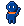

Voici Syn & Néo.
Deux personnages en pixel art nés du logo SYNEO. Syn le bleu, plus jeune, apprend. Néo l'orange, plus grand, transmet. Ensemble : SYN + NÉO = SYNEO. Main dans la main, comme les personnages du logo, ils accompagnent le visiteur tout au long du site.

Les personnages

Syn
Bleu SYNEO, écharpe orange. Le petit du groupe : l'étudiant, le porteur de projet qui se lance. Curieux, il pose les questions.

Néo
Orange SYNEO, écharpe bleue. Le grand : l'entrepreneur confirmé, le mentor. Il transmet et montre le chemin.
L'écharpe reprend la courbe du logo. Elle est toujours de la couleur de l'autre personnage : chacun porte un bout de son partenaire. C'est la synergie.
Une pose par rubrique du site


Boutons & confettis pixel
Les boutons ont des bords en escalier, comme un écran de jeu vidéo. Des confettis carrés bleus, orange et dorés sont semés autour des titres et des personnages.
Mise en situation : le haut de la page d'accueil
 PRISME · 1re édition
PRISME · 1re édition
Seuls, on crée des entreprises. Ensemble, on bâtit des écosystèmes.
SYNEO connecte les jeunes porteurs de projet, les écoles, les entreprises et les institutions. Prochain rendez-vous : le 18 novembre à l'ENSPY.
Règles d'usage
- Toujours en pixels nets (rendu « pixelated »), jamais flous ni lissés.
- Une mascotte par section, posée au bord d'un titre, d'un bouton ou d'une photo. Elle accompagne et ne cache jamais le contenu.
- Ils ne parlent pas au nom de SYNEO dans les textes officiels : ils illustrent, ils ne signent pas.
- Nouvelles poses : même grille, même contour foncé, mêmes couleurs, générées par
scripts/mascotte.py.